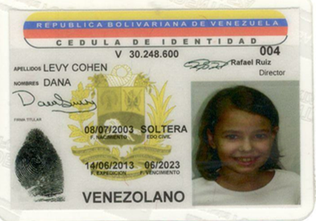
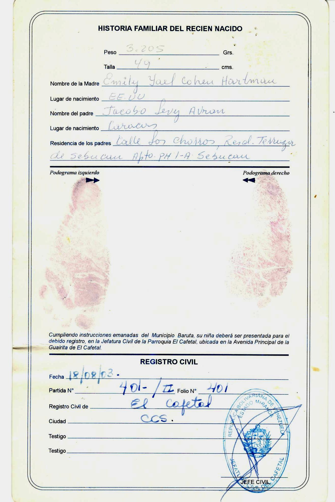

Yo, Dana Levy Cohen

Yo Dana Levy Cohen nací el 8 de julio del 2003, en la policlínica Metropolitana de Venezuela. Nací por parto natural, y estaban presentes mi papá (quién lloró de la emoción al verme), mi mamá ¡obviamente! (quién no lloró pero me dijo que sus primeras palabras al verme fueron: ¡Waoo es igualita a mí!), mi abuela materna (que no se si lloró o no) Y quien asistió el parto fue mi abuelo materno; el doctor Arie Cohen (doctor muy reconocido en la ciudad y en la comunidad) como es costumbre en la familia. Soy la 6ta nieta de mi lado materno y la 4ta del lado paterno, sin contar que soy la mayor de 5 hermanos. Actualmente tengo 14 años, yo nací 9 meses y 5 días después de la boda de mis padres la cual fue el 3 de octubre del 2002, cuando yo nací mi mamá tenía 29 años y mi papá 32.
Desde que nací fui una niña muy despierta, mi mamá cuenta que casi no dormía y siempre estaba atenta a todo lo que ocurría a mí alrededor. Hablé muy rápido, aparentemente a los seis meses ya decía varias palabras. Al ser la primogénita de mis padres, ellos dedicaban todo su tiempo a mí, como ellos dicen: su mundo giraba alrededor de mi persona. Y por eso aprendía muchas cosas. Cuando tenía nueve meses mi mamá queda embarazada por segunda vez. Se sentía muy mal por lo que me dejaba varias horas viendo Barney, pues ella estaba tirada en la cama o en el baño vomitando (dice que se arrepiente, pues tal vez mi adicción a la televisión viene de ese momento). A la edad de 18 meses nació mi hermana Vivi, por lo que dejé de ser hija única y me convertí en hermana mayor. Y así ocurrió en tres oportunidades más: a los 3 años y 3 meses en octubre del 2006 nace mi segundo hermanito Arie Tzvi, a los 6 años y nueve meses nace mi hermanita Analy, el 13 de abril del 2010, recuerdo ese día; yo cursaba preparatorio B y mi papá llegó tarde a recogerme pues ya había nacido Analy y cuando por fin me vino a buscar me llevó directo a la clínica a visitar a mi mamá y allí cargué a mi bebecita (es decir, mi nuevo juguetico). Y el siguiente fue mi hermanito del alma Eli David nacido el 27 de julio del 2016. Fue en las vacaciones y de su nacimiento si recuerdo todo ya que soy 13 años mayor que él. A él lo he cuidado, lo he bañado, cambiado, dado de comer, juego y me preocupo por él. Somos una familia gracias a D-os grande y ruidosa, sin contar desordenada!!
Ciudad de nacimiento
He nacido y crecido en la ciudad de Caracas, a mi parecer la ciudad más hermosa del mundo, rodeada de la majestuosa Wararaira Repano o mejor conocida como el Ávila una montaña que viste de hermosos árboles que desfilan cada uno su propio color verde y en algunos casos amarillos. Mi mamá dice que cada vez que ve estas montañas puede presenciar la obra de D-os y casi todos los días al llevarnos al colegio y visualizar la montaña nos recita la bendición especial que se dice cuando uno ve una belleza natural “Ma Rabú maasé Hashem Kulam vejojmá Hasita” que traduce: “Qué grandiosa la creación de Hashem que todo lo hace con sabiduría”. (Traducción realizada por mi madre)
Esta cuidad me encanta no solo por su belleza física, tiene un clima inigualable, la cual se mantiene casi todo el año, subiendo o bajando algunos grados en los meses, pero por lo general nos permite usar la misma ropa durante todo el año. Lo que más amo de esta ciudad es la comunidad judía que se formó libremente en este país. Aquí se reúnen un grupo de judíos provenientes de distintos países que viven en armonía y respeto. Lo que más me gusta, es Hebraica, el club de la comunidad. Aquí he practicado todas mis actividades deportivas: Gimnasia, Yoga en telas, Karate, tenis, natación, ballet. También realizo mis actividades culturales: Comics, clases de clarinete, canto y Mekorock. Pero lo que amo son mis clases de Bailes Israelíes que no solo recibo, sino que imparto: hoy en día soy markida (profesora de bailes) de los grupos de quinto y sexto grado, primero y segundo grado y preparatorio A y B. Aquí comemos comida Kasher, ya que existen varios concesionarios que ofrecen un variado menú de comida. Me reúno con amigos y familiares y disfruto mucho. Hebraica me atrevo a decir es lo mejor que tiene esta comunidad, sin olvidar por supuesto a su gente!!
Vivienda
Mis primeros meses de vida los viví en la casa de mis abuelos maternos, al cumplir los 3 meses mis papás se mudaron a un apartamento en la Florida en un edificio llamado La Palmera, donde nació mi hermana Vivi y mi hermano Arie, ahí viví hasta los 3 años. Era un apartamento grande, con una sala comedor que recuerdo ser inmensos, y con cuatro habitaciones y dos baños. Quisiera mencionar que ahí vivió mi mamá toda su vida hasta los 18 años de edad, ella amaba esa casa. Teníamos un jardín pequeño en la planta baja y ahí jugábamos mi hermanita Vivi y yo todas las tardes. Tenía un amiguito en ese edificio y era el bisnieto de la conserje se llamaba Alejandro. En ese edificio vivían parejas mayores, así que debíamos jugar en silencio pues no toleraban mucho el ruido. En enero del 2007 vendimos el apartamento, mis padres querían vivir más cerca de la familia, ya que casi todos vivían en la zona de Sebucán y también estar cerca del colegio Moral y Luces Herzl Bialik. A pesar de vivir pocos años en ese apartamento, tengo algunos lindos recuerdo; por ejemplo recuerdo el cumpleaños número 1 de Vivi al que asistieron unos invitados especiales: Barney, Bj y Baby Bop, mis personajes favoritos. Mi cumpleaños número 3 lo celebré en el salón de fiesta de ese edificio. Y lo recuerdo especialmente, ya que yo quería hacer una piscinata y mi mamá compró varias piscinitas y las colocó en el jardín del edificio, pero nadie se metió pues hacía mucho frío. Nos pintamos el pelo con Spray que mi mamá compró para divertirnos, y mi piñata fue de Dora. También recuerdo que mis primos de parte de mi Tía Nina, estaban mucho en nuestra casa ya que vivíamos muy cerca.
Regresamos a la casa de mis abuelos maternos, y a la edad de 4 años me mudé a un edificio llamado Balcones de Sebucán en el cual vivo actualmente. Es un edificio muy bonito, que tiene unas áreas comunes increíbles, que incluyen: una piscina, un parque infantil, gimnasio y cancha de raquet ball y un área de sala de fiestas en la que aprendí a montar bicicleta y a patinar. Cuando era más chiquita íbamos casi todos los domingos a la piscina y disfrutábamos en familia. El apartamento es muy lindo, tiene cuatro habitaciones y una sala de estar y estudio. Yo comparto habitación con mi hermana Vivi, Arie y Analy duermen en otro cuarto, mis padres juntos (Gracias a D-os) y mi hermanito Eli David (el suertudo) duerme solo en otra habitación. También hay una habitación de servicio y en ella duerme una persona muy especial que se llama Dalia, ella trabaja en nuestra casa desde hace mucho tiempo, y yo la siento como una hermana mayor, porque ella me ayuda a combinar mi ropa y me ayuda con mis trabajos del colegio.
En el edificio viven varias familias judías, pero también viven no judíos. Y allí jugamos e interactuamos todos con respeto. Recuerdo un episodio en especial; vivían en el edificio tres hermanas muy chéveres: Victoria, Isabella y Camila, eran más o menos de mi edad y una vez me pregunta Victoria si yo soy judía, a lo que respondo positivamente y ella dice: “ves no todos los judíos son malos, lo que nos dicen en el colegio no es verdad” ese es el único incidente raro que me ocurrió por ser judía.
Vivo en la zona de Sebucán. Aquí viven judíos y no judíos. Los judíos vivimos bien y hasta ahora no hemos sentido ningún tipo de discriminación por el hecho de practicar una religión distinta a la de la mayoría. En esta urbanización viven muchos judíos de la comunidad, por lo que se han construido varias sinagogas en la zona.
Vestimenta
¡Yo visto a la moda! Bueno a mi moda, a mi mamá no le gusta cómo visto, pues a mí me gusta vestir de color negro y mi mamá dice que no me da vida. Mi ropa es como la de los demás, no me diferencio de los no judíos, visto lo que es tendencia, pero no uso shorts, ya que a mi papá no me deja. Mi mamá sufre un poco con este tema, ya que ella viste con recato (siguiendo los lineamientos religiosos) y le duele un poco que nosotras; mi Hermana y yo no queramos vestir como ella. Pero eso sí cuando voy a la sinagoga, si trato de vestir de manera respetuosa y uso falda que llega por las rodillas y camisa manga larga.
La mayoría de los judíos visten con las tendencias modernas del mundo occidental, a pesar que en nuestra comunidad hoy en día existen muchas mujeres que visten con recato basándose en los preceptos de nuestra Torah.
Educación
En septiembre del 2004 a los escasos 14 meses de edad mis padres deciden inscribirme el pre maternal Tip-Tipot, ubicado en el club Hebraica, esta decisión fue tomada ya que como en enero nacía mi hermanita, ellos pensaron que mi mamá necesitaría tiempo de dedicarse a ella. A mí me gustaba ese lugar, allí cantábamos siempre, jugábamos, hacíamos patuques, que era mi actividad favorita y en mi anuario de Tip Tipot dice que mi clase favorita era Hebreo. En clases de hebreo cantábamos y hacíamos Kabalat shabat los viernes en los que hacíamos la jalá y no las llevábamos a casa. Se escogía a una Ima y a un aba para ponerlos al centro de la mesa para decir las berajot de las velas y el pan y mi mamá dice que yo me sentía muy feliz cuando me elegían como ima, ya que tenía la oportunidad de vestir como quería (porque yo siempre fui difícil con la ropa y gustaba ponerme solo lo que yo quería). Recuerdo de manera muy especial a mi maestra Jeli, la cual fue mi maestra desde el momento que ingresé a Tip-Tipot hasta que salí.
A los 4 años de edad finalicé mi etapa de pre maternal y maternal e ingresé al colegio Moral y Luces Herzl Bialik. En septiembre del 2007 comencé kínder Dubim (ositos) y mi maestras eran Alejandra y Andreina y mi mora Luna. Y otra vez mis clases favoritas eran las de hebreo. Me gustó mucho ese salón, mis maestras fueron muy especiales conmigo y allí conocí a dos nuevas amigas: Lily Schachtel y Sidney Stambuli, realmente éramos muy unidas y siempre nos invitábamos a nuestras casas. De hecho ese año celebré mi cumpleaños con Sidney, ya que las dos cumplimos el mismo día.
El Preparatorio A Tazvim (tortugas), lo cursé al siguiente año y mi maestra se llamaba Graciela. Ese año entró al colegio y a mi salón mi querida amiga Sofía Abadí, a la que conozco desde que tengo memoria, su mamá Anabella y mi mamá son muy amigas y nos llevaban al baby gym juntas. Realizamos varios cumpleaños juntas, ya que cumplimos con pocos días de diferencia, de hecho ese año lo celebramos juntas haciendo una piscinata en el edificio donde vivo.
Año escolar 2009-2010, fue mi último año en el preescolar, cursé preparatorio B Otto (carro) y mi maestra era una dulzura llamada Andrea a la que quise mucho. Ese año fue muy especial, pues aprendí a leer y a escribir. Ese año celebré mi cumpleaños 7 con Sofía e hicimos una pijamada en la sala de fiesta del edificio donde vivo, ¡fue lo máximo!
El pre escolar, era un lugar maravilloso con maestras muy cariñosas y un ambiente muy sano. Yo lo recuerdo con felicidad. Íbamos con uniforme; blue jean y una chemise blanca y zapatos de goma blancos o negros. Yo en particular iba en falda, pues me gustaba más. Los salones eran grandes y espaciosos, trabajábamos en mesas y había un lugar de lectura y juegos. Los viernes había que llevar el chaleco azul con el logo institucional y hacíamos kabalat Shabat. Cantábamos el himno de Venezuela, Israel y al finalizar el acto el del colegio. Cantábamos canciones de Shabat y se hacían las berajot de las velas y la Jalá. En el transcurso del año se realizaban varios actos: Los de purim, pesaj, el día del maestro, el día de la alimentación, el día de la madre y el padre. Se celebraba el día al revés en el que debíamos ir vestidos con pijama, esto lo hacíamos en la festividad de purim señalando que a Aman aharasha le salió todo sus planes al revés. Disfruté mucho de la semana bolivariana, en la que un día debíamos vestir como de la época de Bolívar y por supuesto no olvidaré los actos de fin de curso, ya que siempre me ponían en lugares céntricos o me daban papeles importantes.
El año escolar 2010-2011 fue mi primer grado. Mi salón fue 1ero “F” y mi maestra se llamaba Gabriela (le decíamos Gaby) era muy exigente. Ese año fue un shock para mí, pues mandaban tareas todos los días, debíamos ser más responsables con nuestras cosas (y yo no estaba preparada para ser tan responsable), Recuerdo que se me olvidaba traer la agenda escolar a la casa o los libros de tarea, en fin mi mamá y yo discutimos mucho ese año, no solo porque se me olvidaban las cosas, sino porque no quería hacer las tareas.
Segundo grado fue muy similar a primero, muchas tareas y muchas exigencias: mi maestra fue Verónica, ella era muy dulce y cariñosa, yo la quería mucho, pero igual me era difícil seguir las normas y las instrucciones. Por lo que al culminar el año mis padres decidieron probar un nuevo colegio. Nos metieron a todos (Arie, Vivi Y yo) al colegio Sinai. Lo hicieron ya que para ese momento mis padres estaban en un proceso de teshuva (regreso a sus raíces religiosas) y querían una educación más religiosa para sus hijos, aunado al hecho que pensaron que un colegio menos exigente académicamente iba hacer mejor para mí.
El Colegio Sinai es una institución educativa religiosa, en la que niños y niñas estudian y hacen todas las actividades de manera separada. Es un colegio pequeño que cuenta con 200 o 150 alumnos, ubicado en la urbanización la Florida. Tercer grado no me gustó, mi maestra Milagros era muy dura conmigo y la 10 niñitas que cursaban mi salón no fueron muy amables. Ellas se conocían desde pre escolar y yo llegaba nueva en tercer grado, así que me costó adaptarme. Eso sí a nivel de Torah aprendí muchísimo, yo amaba a mi morá Clari y me quedó mucho de Torah en mi vida gracias a sus enseñanzas. Mis padres amaban los viernes escuchar todo lo que mis hermanos y yo habíamos aprendido. A mí no me gustaba en particular el uniforme, pues debíamos llevar una falda azul marino bastante larga que llegaba hasta el tobillo y camisa manga larga blanca que me daba un calor horrible ( a mi mamá le encantaba como nos veíamos)
Pero al finalizar el año escolar Vivi y yo le pedimos a mis padres cambiarnos de nuevo a Hebraica y ya que se había abierto el programa de Pamaj (proyecto en el que se creó un salón para enseñar más judaísmo a los alumnos que lo solicitaran) en el colegio, pues mis padres decidieron dar una oportunidad a Moral y Luces Hertzl Bialik y nos volvieron a inscribir a mi hermana y a mí de nuevo en ese colegio. Mi hermano Arie sí quiso continuar sus estudios en el Colegio Sinai.
Mi cuarto grado para mí fue muy chévere, había hecho amistad con Rachel Caro y Yael Corcia, mi maestra Esther yo la quería mucho, pero mi mamá no. Yo seguí sin querer hacer tareas y eso a Esther no le gustaba mucho y le escribía notas diarias a mi mamá para que me llamara la atención, así que la tensión de mi madre y yo crecía. Se les pidió a mis padres que me hiciera varias evaluaciones, ya que las notas no reflejaban realmente mis conocimientos. Ese año me llevaron con psicólogos, psicopedagogos y terapistas ocupacionales, se me hicieron las correspondientes evaluaciones para concluir que yo era una niña muy inteligente, pero que la parte motora me costaba mucho y por lo tanto debían hacer por parte de la institución varias acomodaciones para mi beneficio. Ante la negativa del colegio de hacer algunos cambios mis padres decidieron al finalizar el año escolar cambiarme de nuevo de colegio.
La Escuela Campo Alegre (ECA) es un colegio de pensum americano, en el que las clases se imparten en inglés. No es un colegio hebreo, es un colegio pluralista, en el que estudian alumnos de todas partes del mundo y de todas religiones. En mi promoción en particular habíamos 3 judíos y los demás eran de diferentes religiones. Los salones constaban con 20 alumnos, estudiábamos: ciencias, humanidades, salud, banda, arte, coro, teatro, español, educación física, biblioteca, orientación y guiatura. Me encantaban las clases, eran muy interesantes y divertidas, ya que la manera de enseñanza era jugando, teníamos variadas actividades, podíamos elegir nuestras materias y me encantaba que todo era por computadora, es decir, no teníamos que escribir a mano. Casi no mandaban tarea y si las mandaban eran cortas y fáciles. El uniforme era la chemise del colegio y la parte de abajo era a preferencia del alumno, con la condición que fuera de color azul o negra. Los zapatos también eran a preferencia sin ninguna condición. El horario era lo mejor, pues las clases comenzaban a las 8:30 am, por lo que podía dormir hasta más tarde y terminaba a las 3:30 pm.
Dos años estudié en el ECA quinto y sexto grado. Llegó el momento de empezar bachillerato y mis padres decidieron que ya era hora de definitivamente integrarme al Sistema Educativo Comunitario.
Mi primer año y lo que va de segundo año lo he estado cursando en el liceo Moral y Luces Herzl Bialik. Y debo decir que ¡amo mi liceo! Aquí tengo amigos, clases interesantes y me encanta recibir clases de judaísmo y hebreo. Este colegio no es religioso, es más bien sionista. Estudian jóvenes no religiosos y también tradicionalistas y pocos son observantes, por lo que podemos decir que es pluralista. El uniforme es pantalón de gabardina azul marino y chemise azul para 1ero, 2do y 3er año, chemise beiche para los que cursan 4to y 5to año.
Hoy en día la comunidad judía de Venezuela a pesar de ir en decadencia numérica, tiene más colegios comunitarios que en años en que éramos muchos más. Hoy en día existe el colegio Maor Ha torah, que alberga una Yeshiva (donde los varones estudian Torah, Mishná y guemará) un y Beit Yaacov (escuela exclusivamente para niñas religiosas) Está el colegio Sinai, institución educativa religiosa, en la que se imparten clases de judaísmo y también sigue el pensum de materias generales exigidos por el Ministerio de Educación. También la comunidad cuenta con el colegio Or Javad, Institución educativa dirigida por la organización luvavich de Venezuela, que presta educación pre escolar y primaria. Maor a Torah y Sinai ofrecen educación pre escolar, primaria y secundaria. Y por supuesto se encuentra nuestro preciado colegio Hebraica, que ofrece educación completa, desde pre escolar hasta bachillerato.
Religión y costumbres
Bueno, vamos a comenzar desde el comienzo, ya que de haber nacido en el seno de una familia tradicionalista ahora formo parte de una familia bien observante de las leyes de la Torah. Ambos padres son judíos. Para cuando yo nací mi padre no comía kasher y mi mamá era “kasher” pero comía en restaurantes que servían comida no kosher, ya sea pescados, pastas o cualquier alimento que no contuviera ni carnes o alimentos marinos prohibidos. Mi mamá decidió que sus hijos siguieran sus lineamientos religiosos. Eso incluía celebrar shabat todos los viernes turnándonos entre casa de mi abuela Elena y mi abuela Sarina. Por supuesto que íbamos en carro. Y los sábados siempre íbamos a casa de mi abuela Elena, recuerdo que veíamos televisión en su casa. Las fiestas de igual manera nos turnábamos entre las dos familias y seguíamos las costumbres gastronómicas de mis abuelos: en mi familia comemos de todo; desde gefilte fish, hasta pescado cocho, cholemt, adafina, oriza o las comidas típicas bujaris.
Como en el año 2011 mis padres comenzaron a acercarse a sus raíces judías y cada uno a su ritmo comenzó a cumplir un poco más de su judaísmo, ya sea mi papá comenzando a comer kosher, mi mamá volviéndose shomer shabat, luego mi padre, después mi mamá vistiendo con recato, luego mi papá estudiando todos los días Torah y asistiendo a la sinagoga para atender a los rezos diarios. Más adelante mi mamá dejó de comer quesos que no fueran kosher, hasta dejar de comer del todo en lugares que no fueran permitidos y finalizando por el tapado del cabello por parte de mi madre, que ocurrió tras el nacimiento de mi hermanito Eli David. Y así sucesivamente cumpliendo más y más (esto con detalles lo explicaré en la biografía de cada uno de mis padres).
Esto trajo grandes cambios en mi vida, ya que de poder comer en cualquier parte, ya ni siquiera me dejan comer una pizza con amigas en cualquier lugar. Es muy difícil para mí la parte del kashrut ya que implica no poder salir a comer con mis amigas en algún restaurante, así sea alimentos lácteos o estar en Puerto Azul (Club de playa) y tener que buscar a mi mamá para que me dé el almuerzo. De hecho hoy en día no falta la vez que le suplique a mi mamá que me deje dinero para comerme una pizza en Puerto Azul, pero ella nunca me deja.
Con respecto al Shabat y las festividades, tratamos de cumplir con las leyes establecidas en la Torah. Ya no viajamos en carro los viernes y sábados o en las fiestas, por lo que dormimos en casa de mis abuelos maternos, ya que a pesar de vivir cerca, por motivos de seguridad preferimos dormir y no trasladarnos de noche caminando a nuestra casa. No utilizamos ningún aparato electrónico y nos dedicamos a comer, conversar y disfrutar en familia. La verdad que debo decir que me encanta celebrar shabat y las festividades judías, es muy especial compartir con la familia. En casa de mi abuela materna, nos reunimos los hermanos de mi mamá y todos sus hijos, somos un total de 26 personas cada Shabat y eso que mi tía Nina hermana de mi mamá no está incluida ya que ella por vivir en la Florida y por ser mucho más religiosa prefiere pasar sus festividades por su zona. A veces ella nos invita a pasar shabat en su casa y nos encanta; comemos rico, compartimos con nuestros primos y siempre aprendemos cosas nuevas de Torah en los shiurim que nos da nuestro tío Freddy, esposo de mi tía Nina. Justo este año será difícil puesto que ellos decidieron probar una temporada en Israel. Los vamos a extrañar mucho.
Debo reconocer que lo que más me gusta de celebrar Shabat y las festividades es ir a la sinagoga. Mi familia va a la sinagoga Or Torah, que tiene costumbre Jalabí, pero yo voy a la sinagoga que queda al lado de esa que es la Tiferet Israel del este. Esta sinagoga es de costumbre marroquí, pero no voy por eso, sino porque allí van muchos jóvenes y me encuentro con un grupo grande de amigas. Voy todos los viernes en la noche, los sábados en la mañana y tarde y por supuesto en las festividades judaicas.
Cultura
En mi casa nos comunicamos en castellano. Mi mamá tiene conocimientos del idioma inglés y hebreo, pero como mi papá habla solo español, ese es el idioma que se maneja en casa. Yo hablo inglés, ya que estudié como lo mencioné ante en un colegio americano. De vez en cuando hablo con mi mamá en inglés.
En mi casa se lee prensa digital, mi papá es muy tecnológico así que todo lo hace vía computadora o teléfono, hasta sus shiurim los escucha vía telefónica. Mi mamá por el contrario todo lo hace por la vía física, le encanta leer y es lo que hace siempre.
El medio de transporte que se utiliza en mi casa es vehículo privado, cada uno de mis padre posee un carro y ellos son los que nos llevan y traen de cualquier lugar.
Con respecto a la disciplina en mi casa, es llevada principalmente por mi papá, mi mamá es más dócil, pero mi papá sí que trata de imponer más disciplina. En general no son tan estrictos y mis hermanos y yo terminamos haciendo lo que nos place.
En cuanto al antisemitismo, yo no he sentido nada de eso en mi vida gracias a D-os.
Ocupaciones
Un día típico en mi vida sería (no importa la edad pues siempre ha sido más o menos igual) Me levanto temprano (a regañadientes, pues odio levantarme temprano) me visto, como, voy al colegio, termino clases y yo ocupo mí tiempo haciendo varias actividades: he hecho; Karate (cinco años seguidos, hasta cinta azul), natación, gimnasia, tenis, ballet, yoga en telas. Hoy en día hago comics, canto, clarinete, bailes israelíes y mecorok. Llego a mi casa, como, hago tareas, reviso mis mensajes en el celular, me baño y me duermo.
Mi papá es comerciante y mi mamá morá de tanaj e historia hebrea en el colegio. A pesar de la situación económica complicada que existe en el país, a mí y a mis hermanos no nos ha faltado nada. Tenemos comida en la mesa, estudiamos en un buen colegio y hemos podido viajar de vez en cuando.
Vacaciones
Mis vacaciones son casi siempre iguales; las de diciembre las pasamos en Puerto Azul, club de playa que queda en el estado Vargas a una hora de camino de mi casa y me encanta. Las vacaciones largas, es decir de julio y agosto, he participado en Macabilandia, campamento de verano organizado por Hebraica. De pequeña participaba como Janijá y desde 6to grado como madrijá, la verdad que me encanta ser parte en ese campamento. Dos años he asistido al campamento de verano Blue Star, en Carolina del Norte, Estados Unidos. Y también hemos viajado por Venezuela como ha sido a Morrocoy, Mérida, Margarita y la Gran Sabana.
Sionismo
La comunidad judía de Caracas, a la cual pertenezco es una comunidad bastante sionista, en el colegio siempre se celebra Yom Haaztmaut (día de la independencia de Israel) y nos mantienen actualizados con cualquier dato o noticia que provenga de Israel. Siempre asisto acompañada de mi mamá y hermanos a la fiesta que realiza el club Hebraica de Yom Haatzmaut. Mi mamá es muy sionista y siempre he escuchado cosas maravillosas de Israel. Mi mamá dice que si un día nos tenemos que ir de este hermoso país nos iríamos a Israel.
Esto en no muy resumidas palabras es mi vida. Tengo 14 años, vivo con mis padres y hermanos, tengo a casi toda mi familia viviendo aquí junto a mí, estudio en un colegio hebreo, tengo amigos mayoritariamente judíos, vivo en un lugar bello y maravilloso donde puedo profesar mi religión de una manera libre y respetada. Quiero a mi comunidad y me siento orgullosa de ella, especialmente porque en mi familia casi todos participan de manera activa en las diferentes instituciones, Empezando por mi mamá quien lleva años dedicándose a imopartir conocimientos judaicos a los jóvenes del liceo, mi papá forma parte de la junta directiva de la Asocición Israelita de Venezuela, ocupandosé especialmente de la parte del Kashrut. Mi Tío Denny que pertenece a la junta directiva de la asociación Israelita de Venezuela y es miembro de la directiva del SEC (Sistema Educativio Comunitario) y presidente de la sinagoga Or Torah. Mi tía Frida, a la que llamamos primera dama de Or Torah, se encarga de los eventos que esta sinagoga organiza y también forma parte de la junta directiva de el club hebreaica junto con mi tía Denise. Yo Siguiendo el ejemplo de mi familia, hago lo propio, participando como Madrijá (guía) en el campamento de verano de Macabilandia y formando parte del grupo de markidot (profesoras de bailes israelíes)de Hebvraica. Amo mi vida como judía en Venezuela.
Documentos
